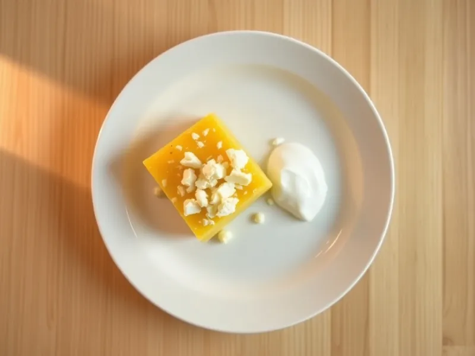

Мамалыга из кукурузной крупы с брынзой
Густая кукурузная каша по-молдавски, которую подают с брынзой и сметаной
40 мин4 порц.364 ккал на порциюБ 12 · Ж 14 · У 44Европейская кухня
Открыть в приложении: порции, таймеры, список покупок
Продукты на 4 порц.
- Кукурузная крупа1,25 стак.
- Вода5 стак.
- Соль1 ч. л.
- Сливочное масло30 г
- Брынза / фета150 г
- Сметана 20% по желанию3 ст. л.
Как готовить
- Вскипятите воду в кастрюле с толстым дном и посолите.
- Всыпайте кукурузную крупу тонкой струйкой, постоянно помешивая венчиком, чтобы не было комков.
- Убавьте огонь до слабого и варите 25-30 минут, часто помешивая деревянной ложкой, пока каша не станет густой и не начнёт отходить от стенок.
- Вмешайте сливочное масло и прогрейте ещё 2 минуты.
- Выложите мамалыгу на доску горкой, дайте постоять 5 минут и нарежьте ниткой или мокрым ножом.
- Подавайте с раскрошенной брынзой и сметаной.
Совет. Если каша всё ещё жидкая, варите дольше: готовая мамалыга держит форму и режется ломтями.